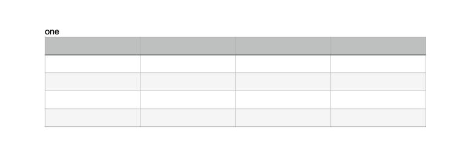
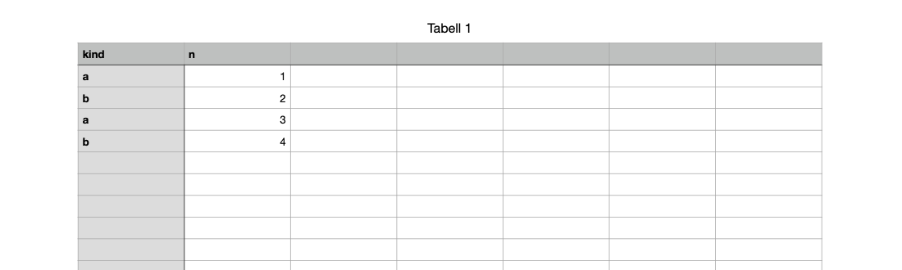

Sample files#
These documents were made for the experiments and are used as examples on this site. Each holds only text typed for the experiment: no images from Apple's templates and no personal details. They were saved by Pages and Numbers 15.4 on macOS 26.5, in Norwegian, so built-in names such as style names appear in Norwegian.
Open any of them with iwork-probe to follow along:
iwork-probe list hello.pages
iwork-probe records hello.pages Index/Document.iwa
iwork-probe text hello.pagesPages#
hello.pages#
Download. A new blank document with the word hello, from 0002. The smallest useful document: one paragraph in the Body style. Reading a Pages document walks through it.

two-paragraphs.pages#
Download. one and two as two paragraphs, from 0005. The text holds U+000A between them, and the paragraph run table (field 5 of the body's text record) has an entry at 0 and one at 4.
table.pages#
Download. A paragraph one and a table, from 0020. The table is anchored in the text by an attachment character, U+FFFC, which points through a type-2003 attachment to a drawable and table model in CalculationEngine.iwa, as in Numbers.

written-by-script.pages#
Download. Not saved by Pages: written by the Python writer from 0288, with new body text and no previews. Pages opens it as an ordinary document. See Writing a document.
Numbers#
kinds-and-numbers.numbers#
Download. A table with a header row kind, n and four rows of a letter and a number, from 0226. Reading a Numbers table decodes its cells.

written-cell.numbers#
Download. Written by script in 0290: one cell's decimal128 replaced with 42.
Other samples#
The experiments made several hundred more documents, which aren't published: many hold images from Apple's templates. Every experiment's recipe says how to make its documents again with AppleScript.